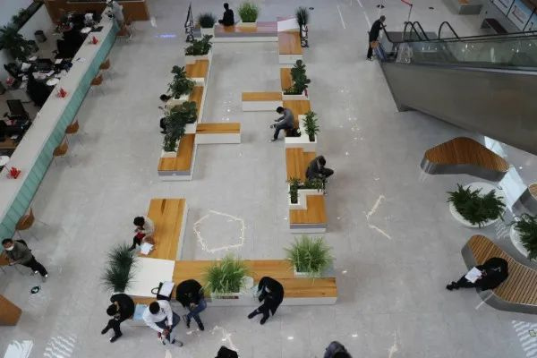
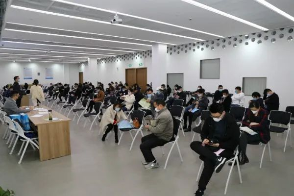
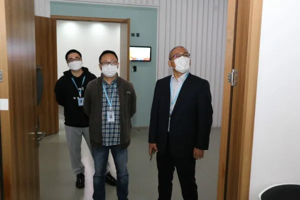

抗疫情保重点 优服务促建设
【信息发布时间：2020-07-09阅读次数：】 【我要打印】 【关闭】
3月21日，苏州市轨道交通S1线工程盾构区间防水材料采购项目在市行政审批局公共资源交易中心顺利完成开标工作，这是我市疫情期间首个在周末完成的交易项目。此举也是交易中心为抗疫情保重点，优服务促建设采取分时段错峰开标措施。
当天上午，佩戴口罩的投标人员在入口处，通过热成像动态体温筛查，出示“苏城码”、“活动轨迹”，扫二维码填写个人信息，提交单位核实的人员健康信息表后，有序进入开标区。
投标人排队扫”苏城码“、”活动轨迹“ 投标人进入开标室静等20分钟后，进行第二次人工测量体温。 项目的投标工作人员由原先的两名以上减少到一名。 现场工作人员对进入现场的人员提醒保持1米以上距离，座位隔空就座，不得扎堆聚集，不喧哗闲聊，不得进入与开标无关的区域。 标前、标后有专人对开标室等交易场所进行全面消毒。   市行政审批局领导监督现场开标  苏州市轨道交通S1线工程盾构区间防水材料采购项目是本市一季度开工重点项目，受疫情影响开标延迟。为推进本市重点项目开工建设，市行政审批局、公共资源交易中心启动重点实事工程项目“一事一议”制度，与市住建局招标办、苏州市轨道交通市域一号线有限公司就疫情防控期间的开评标达成一致方案后，实施开标。 最终，在严格执行疫情防控措施的同时完成了苏州轨交S1线的开评标工作，最大限度降低疫情对经济运行的负面影响，确保“抗疫”和“交易”两不误，保障经济平稳发展。 【周末开标的项目还有：院士路北延（登云路-博士路）苗木移植工程、2020年开发区中环外基础设施养护】